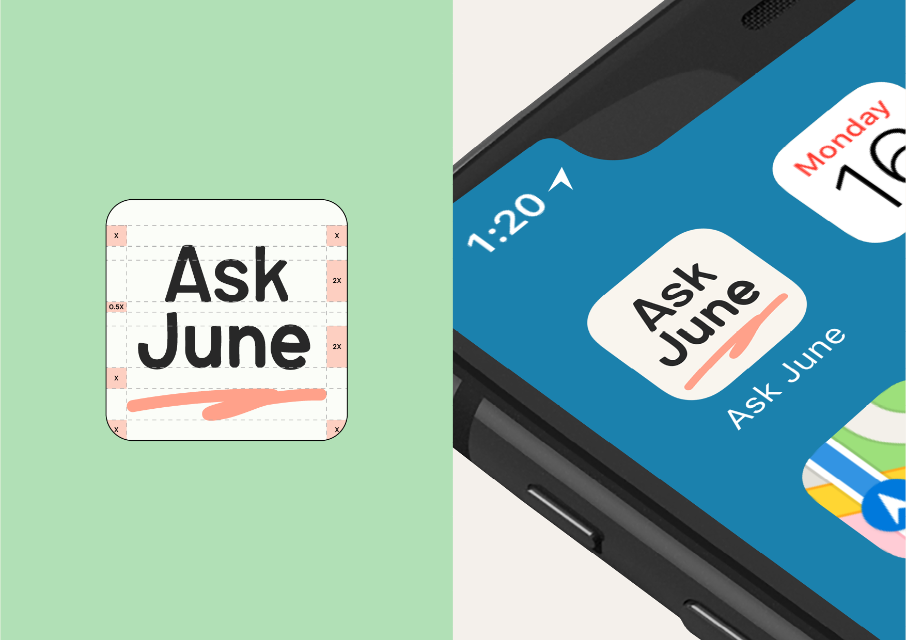
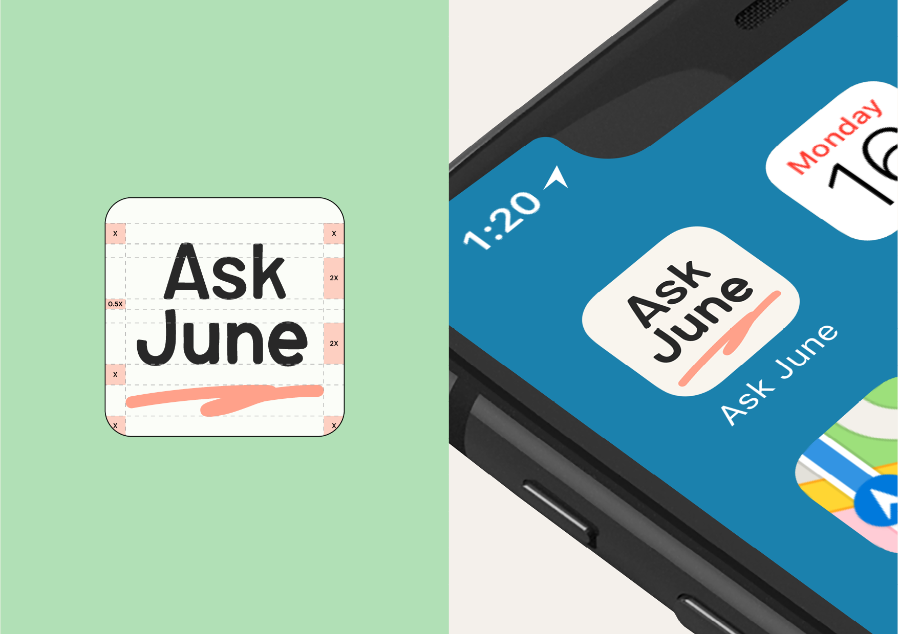
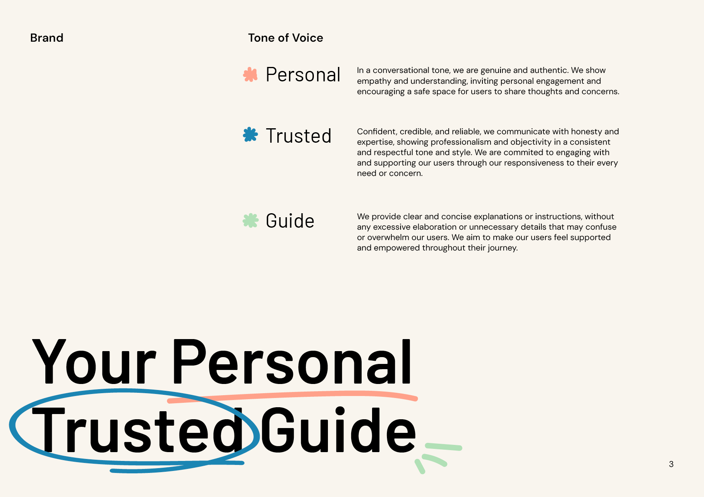
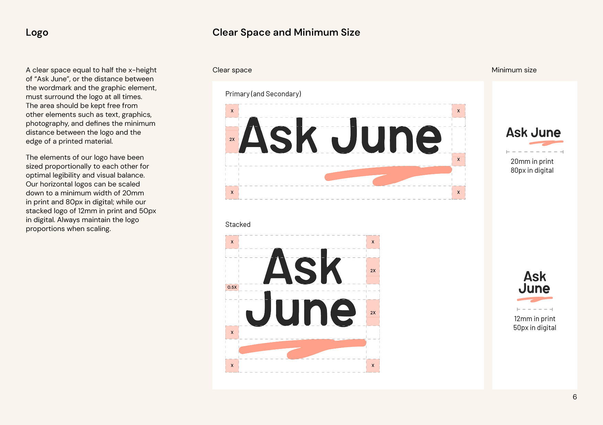
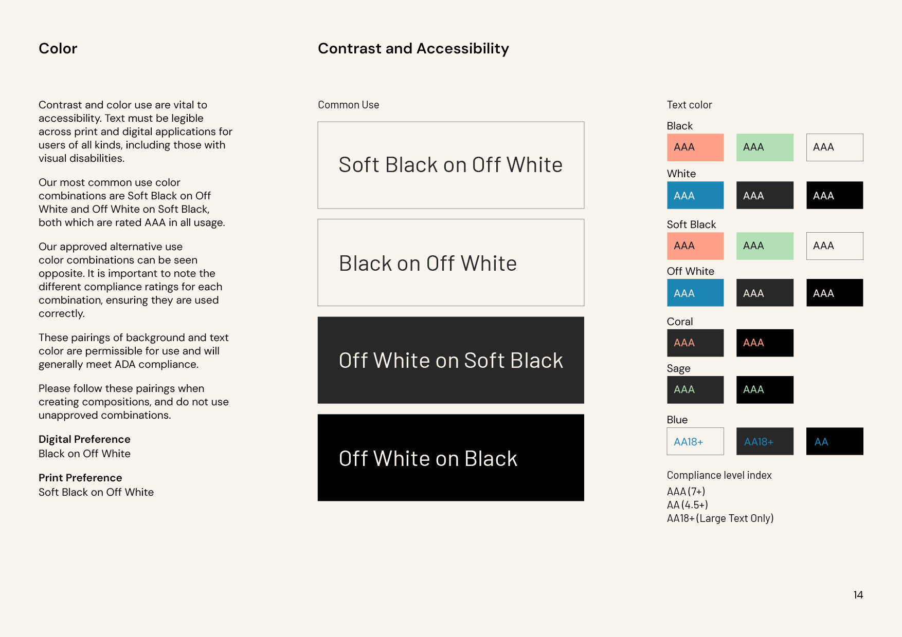
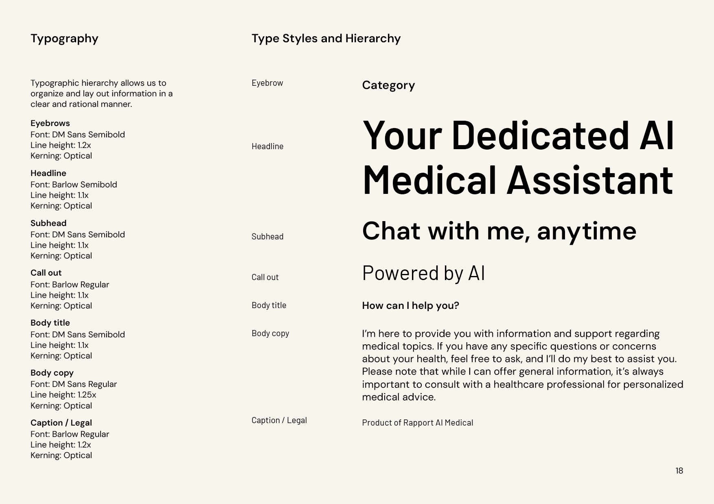
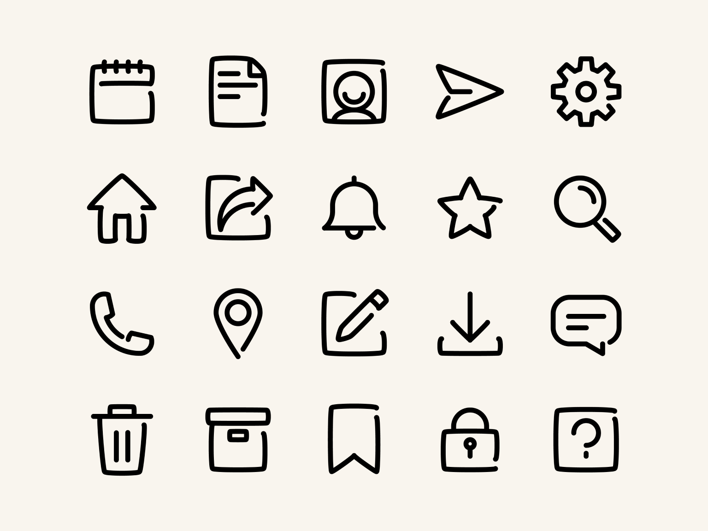

Ask June is an AI chatbot for the general public who have medical enquiries and needs, powered by Rapport AI Medical. It streamlines for users the process of triaging, booking, follow-up and communication with medical professionals all within the mobile system and in real time. Having identified the need for a B2C brand separate from its B2B masterbrand, we created a friendly, spirited, human brand system that follows the positioning of "Your Personal Trusted Guide".
 






Custom functional icons